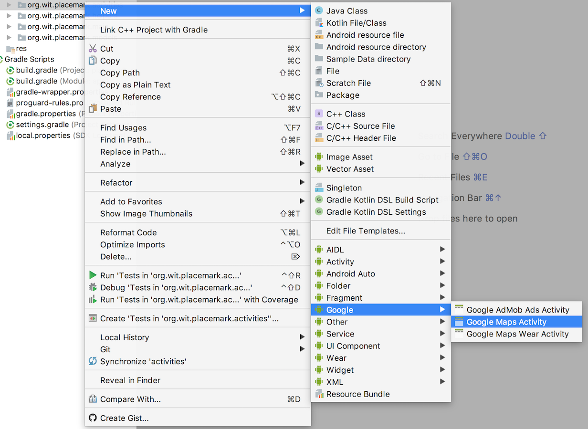
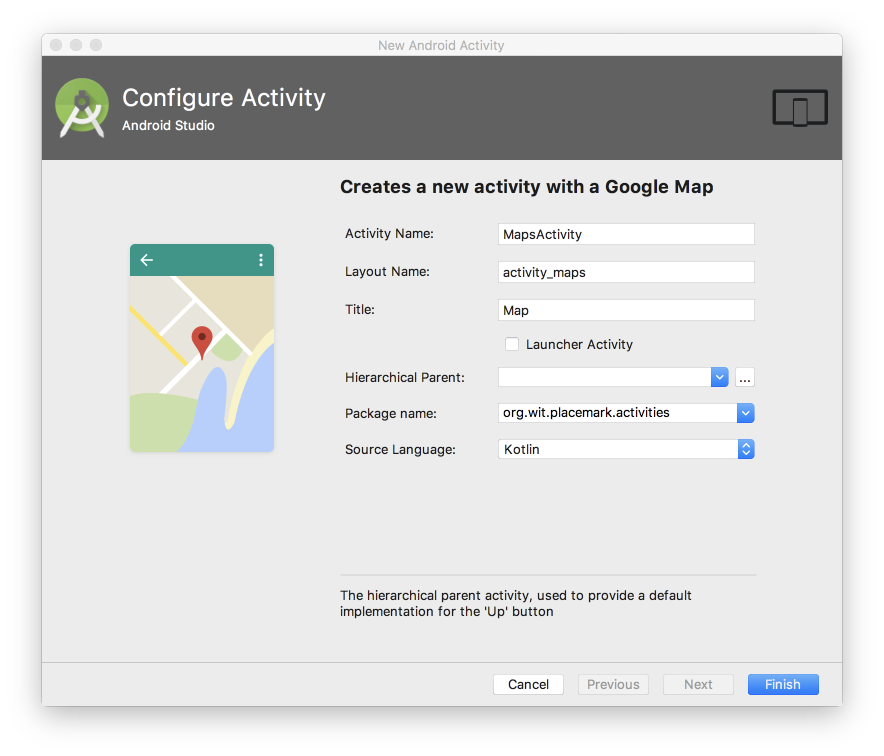
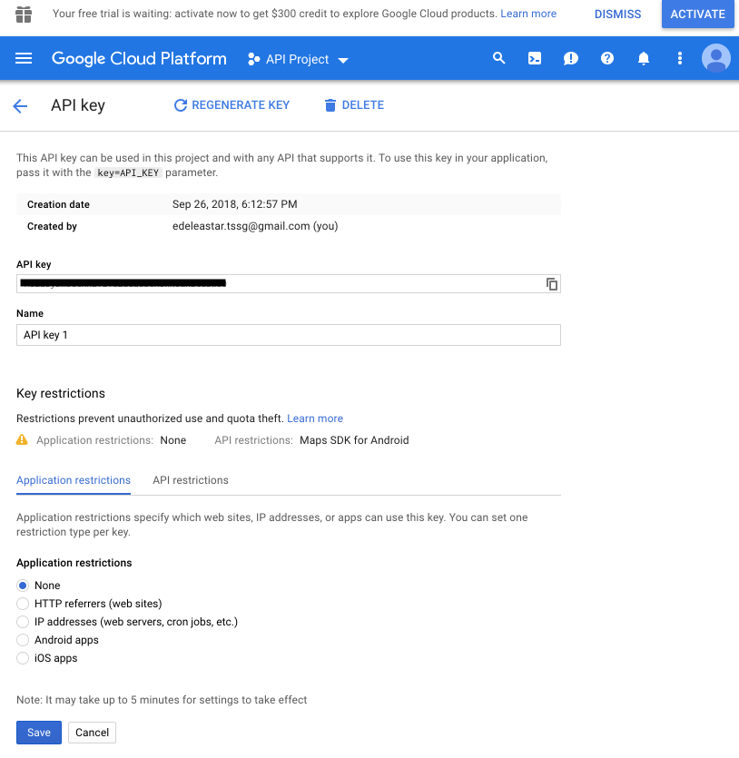
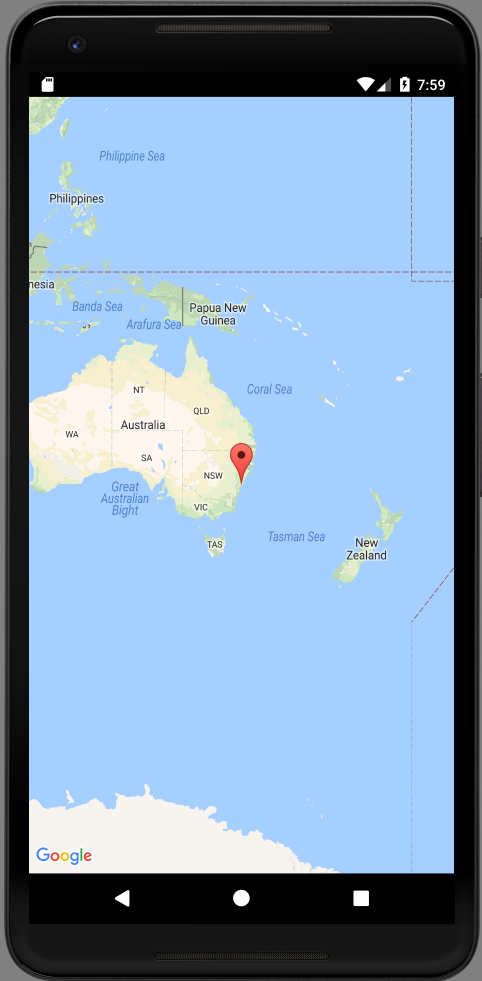
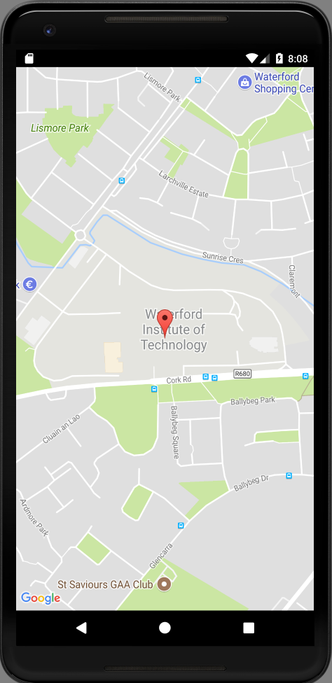
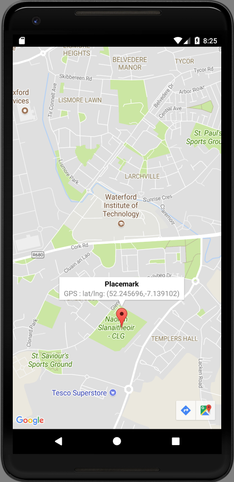

Summary
Include a MapActivity, enabling the user to select the location of the placemark
Exercise Solutions
Exercise 1
As a user, create a new placemark with a title + image. Now edit the placemark and change the title - and update the placemark. Notice that the title has changed in PlacemarkList.
Edit the placemark and change the image - and update the placemark. Go back in to edit the placemark again - what image do you see?
There is a bug here - the placemark activity is still showing the original image. See if you can debug and fix this bug.
Exercise 1 Solution
The problem is we are not changing the stored placemark in the update function in the PlacemarkMemStore:
PlacemarkMemStore
...
override fun update(placemark: PlacemarkModel) {
var foundPlacemark: PlacemarkModel? = placemarks.find { p -> p.id == placemark.id }
if (foundPlacemark != null) {
foundPlacemark.title = placemark.title
foundPlacemark.description = placemark.description
foundPlacemark.image = placemark.image
logAll();
}
}
...Just one line added in the above.
Exercise 2
in PlacemarkActivity, if you are editing a placemark OR if the placemark already has an image, change the button label to be 'Change Image' from
Exercise 2 Solution
strings.xml
<string name="change_placemark_image">Change placemark image</string>PlacemarkActivity
When edit it detected, change the label:
...
if (intent.hasExtra("placemark_edit")) {
...
placemarkImage.setImageBitmap(readImageFromPath(this, placemark.image))
if (placemark.image != null) {
chooseImage.setText(R.string.change_placemark_image)
}
...When an image is loaded, also change the label:
...
IMAGE_REQUEST -> {
if (data != null) {
placemark.image = data.getData().toString()
placemarkImage.setImageBitmap(readImage(this, resultCode, data))
chooseImage.setText(R.string.change_placemark_image)
}
...Exercise 3
Introduce a new ImageView into the PlaceMarkCard view (displayed by PlacemarkListAcivity). Display the placemark images here (if it has one)
Exercise 3 Solution
Extend the card to include an imageView:
card_placemark.xml
<?xml version="1.0" encoding="utf-8"?>
<android.support.v7.widget.CardView
xmlns:android="http://schemas.android.com/apk/res/android"
android:layout_width="match_parent"
android:layout_height="wrap_content"
android:layout_marginBottom="8dp"
android:elevation="24dp">
<RelativeLayout
android:layout_width="match_parent"
android:layout_height="wrap_content"
android:padding="16dp">
<ImageView
android:id="@+id/imageIcon"
android:layout_width="64dp"
android:layout_height="64dp"
android:layout_alignParentLeft="true"
android:layout_alignParentTop="true"
android:layout_marginRight="16dp"/>
<TextView
android:id="@+id/placemarkTitle"
android:layout_width="wrap_content"
android:layout_height="wrap_content"
android:layout_alignParentTop="true"
android:layout_toRightOf="@+id/imageIcon"
android:textSize="30sp"/>
<TextView
android:id="@+id/description"
android:layout_width="wrap_content"
android:layout_height="wrap_content"
android:layout_below="@id/placemarkTitle"
android:layout_toRightOf="@+id/imageIcon"/>
</RelativeLayout>
</android.support.v7.widget.CardView>In the adapter - initialise the imageView from the model:
PlacemarkAdapter
...
fun bind(placemark: PlacemarkModel, listener : PlacemarkListener) {
itemView.placemarkTitle.text = placemark.title
itemView.description.text = placemark.description
itemView.imageIcon.setImageBitmap(readImageFromPath(itemView.context, placemark.image))
itemView.setOnClickListener { listener.onPlacemarkClick(placemark) }
}
...Location Resources
First introduce a new button to set the location. This requires:
- string resource
- button
- event handler
strings.xml
<string name="button_location">Set Location</string>activity_placemark.xml
<Button
android:id="@+id/placemarkLocation"
android:layout_width="match_parent"
android:layout_height="wrap_content"
android:layout_margin="16dp"
android:background="@color/colorAccent"
android:paddingBottom="8dp"
android:paddingTop="8dp"
android:stateListAnimator="@null"
android:text="@string/button_location"
android:textColor="@color/colorPrimary"
android:textSize="16sp"/>PlacemarkActivity
placemarkLocation.setOnClickListener {
info ("Set Location Pressed")
}Build & run the application now and make sure the button appears as expected

and also the log appears when the button is pressed.
Google Maps Activity
Briefly review then general guide to incorporating google maps here:
In Studio, select the activities package, and from the context menu insert a new Google Maps activity:

This will suggest this configuration:

Accept all defaults and press Finish.
File Updates
This will generate updates to the following files:
build.gradle:
implementation 'com.google.android.gms:play-services-maps:15.0.1'strings.xml
<string name="title_activity_maps">Map</string>AndroidManifest.xml
<?xml version="1.0" encoding="utf-8"?>
<manifest xmlns:android="http://schemas.android.com/apk/res/android"
package="org.wit.placemark">
<!--
The ACCESS_COARSE/FINE_LOCATION permissions are not required to use
Google Maps Android API v2, but you must specify either coarse or fine
location permissions for the 'MyLocation' functionality.
-->
<uses-permission android:name="android.permission.ACCESS_FINE_LOCATION" />
<application
android:name=".main.MainApp"
android:allowBackup="true"
android:icon="@mipmap/ic_launcher"
android:label="@string/app_name"
android:roundIcon="@mipmap/ic_launcher_round"
android:supportsRtl="true"
android:theme="@style/AppTheme">
<activity android:name=".activities.PlacemarkActivity"></activity>
<activity android:name=".activities.PlacemarkListActivity">
<intent-filter>
<action android:name="android.intent.action.MAIN" />
<category android:name="android.intent.category.LAUNCHER" />
</intent-filter>
</activity>
<!--
The API key for Google Maps-based APIs is defined as a string resource.
(See the file "res/values/google_maps_api.xml").
Note that the API key is linked to the encryption key used to sign the APK.
You need a different API key for each encryption key, including the release key that is used to
sign the APK for publishing.
You can define the keys for the debug and release targets in src/debug/ and src/release/.
-->
<meta-data
android:name="com.google.android.geo.API_KEY"
android:value="@string/google_maps_key" />
<activity
android:name=".activities.MapsActivity"
android:label="@string/title_activity_maps"></activity>
</application>
</manifest>New Files
In Addition, these new files will have been generated:
activity_maps.xml
<?xml version="1.0" encoding="utf-8"?>
<fragment xmlns:android="http://schemas.android.com/apk/res/android"
xmlns:map="http://schemas.android.com/apk/res-auto"
xmlns:tools="http://schemas.android.com/tools"
android:id="@+id/map"
android:name="com.google.android.gms.maps.SupportMapFragment"
android:layout_width="match_parent"
android:layout_height="match_parent"
tools:context=".activities.MapsActivity" />MapsActivity
package org.wit.placemark.activities
import android.support.v7.app.AppCompatActivity
import android.os.Bundle
import com.google.android.gms.maps.CameraUpdateFactory
import com.google.android.gms.maps.GoogleMap
import com.google.android.gms.maps.OnMapReadyCallback
import com.google.android.gms.maps.SupportMapFragment
import com.google.android.gms.maps.model.LatLng
import com.google.android.gms.maps.model.MarkerOptions
class MapsActivity : AppCompatActivity(), OnMapReadyCallback {
private lateinit var mMap: GoogleMap
override fun onCreate(savedInstanceState: Bundle?) {
super.onCreate(savedInstanceState)
setContentView(R.layout.activity_maps)
// Obtain the SupportMapFragment and get notified when the map is ready to be used.
val mapFragment = supportFragmentManager
.findFragmentById(R.id.map) as SupportMapFragment
mapFragment.getMapAsync(this)
}
/**
* Manipulates the map once available.
* This callback is triggered when the map is ready to be used.
* This is where we can add markers or lines, add listeners or move the camera. In this case,
* we just add a marker near Sydney, Australia.
* If Google Play services is not installed on the device, the user will be prompted to install
* it inside the SupportMapFragment. This method will only be triggered once the user has
* installed Google Play services and returned to the app.
*/
override fun onMapReady(googleMap: GoogleMap) {
mMap = googleMap
// Add a marker in Sydney and move the camera
val sydney = LatLng(-34.0, 151.0)
mMap.addMarker(MarkerOptions().position(sydney).title("Marker in Sydney"))
mMap.moveCamera(CameraUpdateFactory.newLatLng(sydney))
}
}google_maps_api.xml
<resources>
<!--
TODO: Before you run your application, you need a Google Maps API key.
To get one, follow this link, follow the directions and press "Create" at the end:
https://console.developers.google.com/flows/enableapi?apiid=maps_android_backend&keyType=CLIENT_SIDE_ANDROID&r=BC:AA:86:5A:D7:8C:52:EA:1C:F2:24:FB:80:2C:A6:73:1D:B4:DA:8B%3Borg.wit.placemark.activities
You can also add your credentials to an existing key, using these values:
Package name:
BC:AA:86:5A:D7:8C:52:EA:1C:F2:24:FB:80:2C:A6:73:1D:B4:DA:8B
SHA-1 certificate fingerprint:
BC:AA:86:5A:D7:8C:52:EA:1C:F2:24:FB:80:2C:A6:73:1D:B4:DA:8B
Alternatively, follow the directions here:
https://developers.google.com/maps/documentation/android/start#get-key
Once you have your key (it starts with "AIza"), replace the "google_maps_key"
string in this file.
-->
<string name="google_maps_key" templateMergeStrategy="preserve" translatable="false">YOUR API KEY HERE</string>
</resources>In the above file, you will need to insert your own API Key.
Before proceeding, you will need to get a google map api key. Follow the guide here:
Thus might take a little while, as you navigate through the various features available. The key will be a long string applicable to a range of google services. You can choose to restrict it to just the Maps API.
Google have recently switched to a subscription model - and will be prompting you to sign up for free credits for using the api, seeking a credit card (which they promise not to charge). You can ignore this safely for the moment, as the modest number of requests we make should work without registration.
Your key page might look like this:

Notice that application restrictions have been set to 'none'
Also, once you have inserted into the google_maps_api.xml file, make sure you no NOT commit this file to any public repository (github). This key is intended to be a secret to your account. If you are using git, the simplest way of doing this is to append the following to .gitignore:
app/src/release/res/values/google_maps_api.xml
app/src/debug/res/values/google_maps_api.xmlRebuild the app - you may get an error:
MasActivity
Unresolved reference: RIf you get this error, include this import:
import org.wit.placemark.RIf all goes well, you should be able to start the maps activity:
PlacemarkActivity
placemarkLocation.setOnClickListener {
startActivity (intentFor<MapsActivity>())
}If they key is correctly entered, the map should appear:

Tidyup Generated code
We might remove some of the additional comments generated by the studio wizard (read them first)
AndroidManifest.xml
<?xml version="1.0" encoding="utf-8"?>
<manifest xmlns:android="http://schemas.android.com/apk/res/android"
package="org.wit.placemark">
<uses-permission android:name="android.permission.ACCESS_FINE_LOCATION" />
<application
android:name=".main.MainApp"
android:allowBackup="true"
android:icon="@mipmap/ic_launcher"
android:label="@string/app_name"
android:roundIcon="@mipmap/ic_launcher_round"
android:supportsRtl="true"
android:theme="@style/AppTheme">
<activity android:name=".activities.PlacemarkActivity"></activity>
<activity android:name=".activities.PlacemarkListActivity">
<intent-filter>
<action android:name="android.intent.action.MAIN" />
<category android:name="android.intent.category.LAUNCHER" />
</intent-filter>
</activity>
<meta-data
android:name="com.google.android.geo.API_KEY"
android:value="@string/google_maps_key" />
<activity
android:name=".activities.MapsActivity"
android:label="@string/title_activity_maps"></activity>
</application>
</manifest>MapsActivity
package org.wit.placemark.activities
import android.support.v7.app.AppCompatActivity
import android.os.Bundle
import com.google.android.gms.maps.CameraUpdateFactory
import com.google.android.gms.maps.GoogleMap
import com.google.android.gms.maps.OnMapReadyCallback
import com.google.android.gms.maps.SupportMapFragment
import com.google.android.gms.maps.model.LatLng
import com.google.android.gms.maps.model.MarkerOptions
import org.wit.placemark.R
class MapsActivity : AppCompatActivity(), OnMapReadyCallback {
private lateinit var mMap: GoogleMap
override fun onCreate(savedInstanceState: Bundle?) {
super.onCreate(savedInstanceState)
setContentView(R.layout.activity_maps)
val mapFragment = supportFragmentManager
.findFragmentById(R.id.map) as SupportMapFragment
mapFragment.getMapAsync(this)
}
override fun onMapReady(googleMap: GoogleMap) {
mMap = googleMap
val sydney = LatLng(-34.0, 151.0)
mMap.addMarker(MarkerOptions().position(sydney).title("Marker in Sydney"))
mMap.moveCamera(CameraUpdateFactory.newLatLng(sydney))
}
}Also, revise the default location + zoom level:
MapsActivity
override fun onMapReady(googleMap: GoogleMap) {
mMap = googleMap
val wit = LatLng(52.245696, -7.139102)
mMap.addMarker(MarkerOptions().position(wit).title("Marker in Waterford"))
mMap.moveCamera(CameraUpdateFactory.newLatLngZoom(wit, 16f))
}
Location Model
We would like to include the location into our model, so we can record the latitude/longitude the user selects. Introduce this new class alongside the PlacemarkModel class:
PlacemarkModel
@Parcelize
data class Location(var lat: Double = 0.0,
var lng: Double = 0.0,
var zoom: Float = 0f) : ParcelablePut this class in the same source file as PlacemarkModel.
We can now pass a location to the MapsActivity:
PlacemarkActivity
placemarkLocation.setOnClickListener {
val location = Location(52.245696, -7.139102, 15f)
startActivity (intentFor<MapsActivity>().putExtra("location", location))
}Here is a revised version of MapsActivity - which uses the Location model
MapsActivity
package org.wit.placemark.activities
...
class MapsActivity : AppCompatActivity(), OnMapReadyCallback {
private lateinit var mMap: GoogleMap
var location = Location()
override fun onCreate(savedInstanceState: Bundle?) {
super.onCreate(savedInstanceState)
setContentView(R.layout.activity_maps)
location = intent.extras.getParcelable<Location>("location")
val mapFragment = supportFragmentManager
.findFragmentById(R.id.map) as SupportMapFragment
mapFragment.getMapAsync(this)
}
override fun onMapReady(googleMap: GoogleMap) {
mMap = googleMap
val loc = LatLng(location.lat, location.lng)
mMap.addMarker(MarkerOptions().position(loc).title("Default Marker"))
mMap.moveCamera(CameraUpdateFactory.newLatLngZoom(loc, location.zoom))
}
}Read this carefully, and note how the location object is being used. Specifically :
- it is being recovered from the intent in onCreate
- it is being used on onMapReady to center the map on the recovered location
Experiment with different hard coded lat/lng + zoom values and verify that the MapsActivity correctly renders.
This is a slightly revised onMapReady implementation:
MapsActivity
override fun onMapReady(googleMap: GoogleMap) {
mMap = googleMap
val loc = LatLng(location.lat, location.lng)
val options = MarkerOptions()
.title("Placemark")
.snippet("GPS : " + loc.toString())
.draggable(true)
.position(loc)
mMap.addMarker(options)
mMap.moveCamera(CameraUpdateFactory.newLatLngZoom(loc, location.zoom))
}Try it out now.

You should be able to select the marker - it will display its lat/lng. And also able to drag it to a different location.
Finally, to keep the code more consistent, rename the map from mMap to map:
MapsActivity
class MapsActivity : AppCompatActivity(), OnMapReadyCallback {
private lateinit var map: GoogleMap
var location = Location()
override fun onCreate(savedInstanceState: Bundle?) {
super.onCreate(savedInstanceState)
setContentView(R.layout.activity_maps)
location = intent.extras.getParcelable<Location>("location")
val mapFragment = supportFragmentManager
.findFragmentById(R.id.map) as SupportMapFragment
mapFragment.getMapAsync(this)
}
override fun onMapReady(googleMap: GoogleMap) {
map = googleMap
val loc = LatLng(location.lat, location.lng)
val options = MarkerOptions()
.title("Placemark")
.snippet("GPS : " + loc.toString())
.draggable(true)
.position(loc)
map.addMarker(options)
map.moveCamera(CameraUpdateFactory.newLatLngZoom(loc, location.zoom))
}
}Recover Location from Activity
Currently, when you press back from the MapsActivity, any change made in the marker by the user is lost. We need to address this now.
First, add these fields to the ActivityPlacemark class:
PlacemarkActivity
val LOCATION_REQUEST = 2
var location = Location(52.245696, -7.139102, 15f)When we start the map, we pass the LOCATION_REQUEST code:
placemarkLocation.setOnClickListener {
startActivityForResult(intentFor<MapsActivity>().putExtra("location", location), LOCATION_REQUEST)
}Now, when a result is returned, we detect a LOCATION_REQUEST response, and recover the location:
override fun onActivityResult(requestCode: Int, resultCode: Int, data: Intent?) {
super.onActivityResult(requestCode, resultCode, data)
when (requestCode) {
IMAGE_REQUEST -> {
if (data != null) {
placemark.image = data.getData().toString()
placemarkImage.setImageBitmap(readImage(this, resultCode, data))
chooseImage.setText(R.string.change_placemark_image)
}
}
LOCATION_REQUEST -> {
if (data != null) {
location = data.extras.getParcelable<Location>("location")
}
}
}
}Try the app now - and drag the marker to a new location.
When you press back - and you get to the PlacemarkActivity - try pressing Set Location again. What happens? It still doesn't seem to remember the new location.
Introduce some logging statements to see what is happening. We will fix this in the next step.
Listening for Marker Drag Events
To get this to work, we need further capabilities in MapsActivity.
First, implement a new interface:
MapsActivity
class MapsActivity : AppCompatActivity(), OnMapReadyCallback, GoogleMap.OnMarkerDragListener {This interface requires three methods:
override fun onMarkerDragStart(marker: Marker) {
}
override fun onMarkerDrag(marker: Marker) {
}
override fun onMarkerDragEnd(marker: Marker) {
location.lat = marker.position.latitude
location.lng = marker.position.longitude
location.zoom = map.cameraPosition.zoom
}We are only interested in one of these methods for the moment.
We need modify the onMapReady method to make sure we are listening for this event:
override fun onMapReady(googleMap: GoogleMap) {
...
map.setOnMarkerDragListener(this)
...
}Finally, we need to intercept the back button, and send it back to the parent activity:
override fun onBackPressed() {
val resultIntent = Intent()
resultIntent.putExtra("location", location)
setResult(Activity.RESULT_OK, resultIntent)
finish()
super.onBackPressed()
}Try this now - and verify that if you change the location - and then immediately press back and then renter the map again. The location should be remembered, and the map centred to the new location.
Solution
Placemark application so far:
This archive does not include the Google Maps API keys - so will not build
Exercise 1
If you create a new placemark - and set it location, note that when you click on the marker it shows its lat/lng. Move it around - and notice that the lat/lng in the panel never changes (even though it is at a different location).
See if you can fix this - such that it always shows the correct location.
(HINT: look up GoogleMap.OnMarkerClickListener and setSnippet)
Exercise 2
When you leave the PlacemarkActiviy, the location is not currently stored in the PlacemarkModel correctly. So when you edit a placemark, it is back at the default location.
Fix this by making location part of the placemark model, so we can edit and change the locations for existing markers.
HINT: the simplest way of approach this might be to just extend the model to include three new fields:
@Parcelize
data class PlacemarkModel(var id: Long = 0,
var title: String = "",
var description: String = "",
var image: String = "",
var lat : Double = 0.0,
var lng: Double = 0.0,
var zoom: Float = 0f) : Parcelable... and then manage these accordingly.